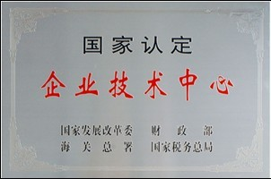
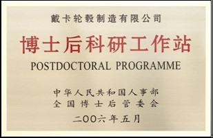
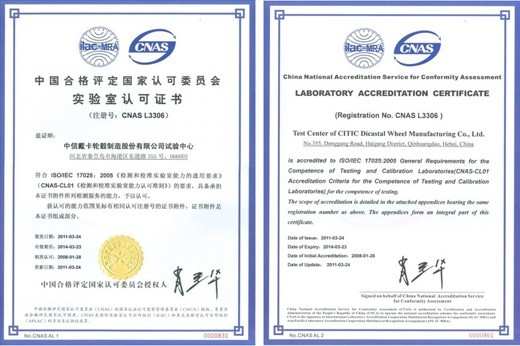

Ihre Stelle：Kompetenz --> Technische Entwicklung
Ihre Stelle：Kompetenz --> Technische EntwicklungTechnische Entwicklung
Als weltweit führender Lieferant für Lösung im Bereich der Automobilindustrie, Citic Dicastal hat in Nordamerika, Europa, Japan sowie in den chinesischen Städte Changchunund Shanghai, wo die Mehrheit der Kunden sich befinden, die F&E-Branch Office eingerichtet. Mittels des globalen Aufstellung der F & E Standorte kann Citic Dicastal lokale Design und Engineering-Dienstleistungen anbieten. Auf Grundlage der Verwendung des PLM-Systemes wird das Management des gesamten Produktlebenszyklus realisiert und eine leistungsfähige Unterstützung der interregionalen kooperativen Design ermöglicht.
CITIC Dicastal hat ein vielfältiges tiefes Verständnis für die Gestaltung unterschiedlicher Kundenanforderungen, technische Standards und Entwicklungsprozesse durch die jahrelange Zusammenarbeit mit unterschiedlichen OEMs in Europa, Nordamerika, Japan und China erworben. Auf Grundlage des breiten Prozessspektrums bietet CITIC Dicastal den Kunden schnelle Integrationslösungen an und erstellt verschiedene kreative Lösungen in der Fahrzeugkonzeptphase. CITIC Dicastal kanndurch vielfältigen Technologien für aluminum parts forming mainstream (Niederdruckguss, Flow Forming, Schmieden, CPC , HPDC , CVC, etc) mehr als 100 Arten von Oberflächenbedingungen bieten, um die Nachfrage der globalen Kunden best möglich und zur vollsten Zufriedenheit zu erfüllen.
"Unsere Kunden stehen im Mittelpunkt" ist ein Leitsatz unseres Entwicklungskonzepts. Mit starken F & E-Kompetenzen zählt CITIC Dicastal zu den globalen Lieferanten der Dutzenden von namhaften internationalen Automobil-Unternehmen. Gemeinsam mit dem Williams F1 Team entwickelt CITIC Dicastal zum Beispiel die high-level leichtgewicht Aluminum Racing Felgen.
CITIC Dicastal hat ein System zur Förderung der technologischen Innovation erstellt. In enger Zusammenarbeit mit Hochschulen und Forschungseinrichtungen von Nordamerika, Europa, Japan und China lebt das Unternehmen in allen Bereichen den kontinuierlichen Verbesserungsprozess und entwickelt im eigenen F&E Zentren kundenorientierte Lösungen. Beispielhaft können Entwicklung der Gießtechnik mit Wasserkühlung, vielfältige Farbprozesse, transparente Farbe, Lackierungstechnologienund Technologien der Oberflächenbehandlung genannt werden. Darüber hinaus beteiligte sich Dicastal an Festlegung der zahlreichen oder industriellen Standards und reichte aktuell über 2000 Patente ein.
CITIC Dicastal Testzentrum
Das CITIC Dicastal Testzentrum bietet verschiedenste Prüftechnik in den Bereichen der Alufelgen und Fahrwerksteilprüfung. Im weltweit modernsten Labor können vollständige Prüfungen durchgefuehrt werden, deren Ergebnisse von den weltweit bekanntesten OEMs anerkannt werden. Seit 2007 ist des Testzentrum nach ISO / IEC 17025 zertifiziert.
Im Testzentrum stehen derzeit über 70 Testanlagen zur Verfügung, mit denen über 100 verschiedene Prüfungen durchgeführt werden. Die Prüfung der Massgenauigkeit, metallurgische Tests, Zuverlässigkeits- und Sicherheitsprüfungen und Leistungstests von Beschichtungen sind nur ein Teil des gesamten Prüfspektrums. Die vertikale Kerbschlagprüfung, der Doppel-Spindel-Ermüdungstest sowie der Filiformtest werden zum erstenmal an Testprojekten in China durchgeführt.
Mittels fortschritlicher Hydraulik-Testsysteme, im internationalen Vergleich auf hösten Niveau, können die Haltbarkeit und die Festigkeit von Strukturteilen des Fahrzeugs unter normalen und extremen Umgebungsbedingungen geprüft werden. Hierzu werden Single-Kannel und Multi-KannelSysteme eingesetzt. Auf Grundlage vorhandener Fähigkeiten unseres Testteams können verschiedenster Spannvorrichtungen entwickelt und für den jeweiligen Testzweck angepasst werden.
In den letzten zwei Jahren waren die bedeutensten Testprojekten:
•dieVerifikation von Felgenfestigkeit,
•das Testen der Haftkraft von Balance Block,
•die Evaluation von Trägheitsmoment,
•die Spannungs- und Dehnungsprüfung,
•der Steifigkeittest,
•natürliche Frequenztest und
•die Mutter-Sitz-Festigkeitsprüfung.
Während dieser Zeit wurden verschiedenste Forschungsprojekte ebenfalls durchgeführt. Die enscheidensten waren:
•die Forschung auf Ermüdungseigenschaften von Materialien,
•dier Ermüdungstest der Alufelge mittels S-N-Kurve,
•der Einfluss der inneren Gussfehler undder Mikrostruktur im Hinblick auf die Bauteileigenschaften und
•die Anwendung von vertikaler Kerbschlagprüfung.
Auf Grund Lage hervorragenden Forschungen im Bereich der Alufelgenprüfungen konnte ein großer Beitrag zur Erstellung von verschiedener nationaler Standards und Rad-Industrie-Standards geleistet werden. Viele Standard wurden erstelt.
Auf Basis des Austausches und der Zusammenarbeit bestehen im Bereich der experimenteller Forschung und Analyse mit nationalen und international bekannten Universitäten, wie dem „National Institute of nonferrous metals“, sehr gute Beziehungen. Ebenfalls wird mit internationalen fortgeschrittenen Prüflaboratorien (ITS, SAE, TÜV, BMW Labor) eine beidseitige erfolgreiche Zusammenarbeit gepflegt.
 
